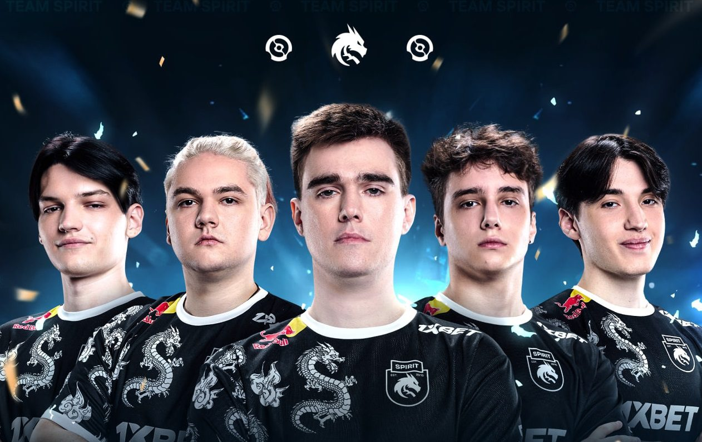

Team Spitit - Двухкратные чемпионы международного турнира по Dota 2 The International
Team Spirit — международная, изначально российская мультигейминговая киберспортивная организация, имеющая составы по Dota 2, Counter-Strike 2, Hearthstone и Mobile Legends: Bang Bang.
В 2021 году Team Spirit стала победителем крупнейшего международного турнира по Dota 2 The International 10, получив рекордный на данный момент выигрыш в киберспорте — более 18 миллионов долларов. В августе 2022 года выиграла Арлингтонский мейджор, обыграв в финале команду PSG.LGD со счетом 3:1. В июле 2023 года выиграла Riyadh Masters, обыграв в финале команду Team Liquid со счетом 3:1.
В 2023 году Team Spirit во второй раз стали чемпионами The International.